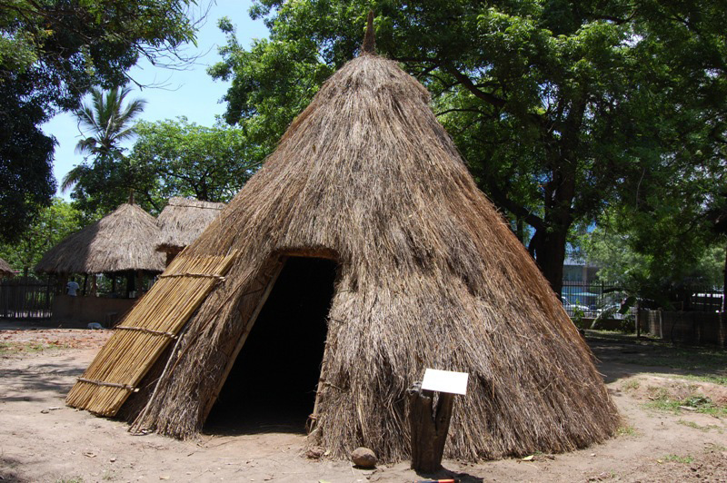
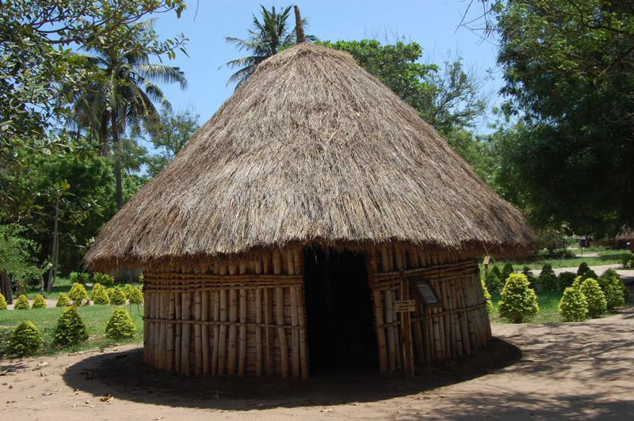

Sura ya Kwanza · Utamaduni wetu
Nyumba za asili
Nyumba za asili
Nyumba ni jengo ambalo watu huishi. Nyumba za asili hutumika kama makazi ya jamii za Kitanzania.
Aina ya nyumba za asili
Kuna aina mbalimbali za nyumba za asili za Kitanzania kama vile msonge, banda na tembe.
Nyumba ya msonge
Nyumba ya msonge ni nyumba ambayo inajengwa ikiwa na paa lililochongoka. Nyumba hii hujengwa kwa kutumia fito, magamba ya migomba, magome ya miti, matope, matawi ya mimea au nyasi ngumu. Baadhi ya jamii za Kitanzania ambazo zimekuwa zikitumia nyumba hizi ni Wahaya, Wasafwa, Wafipa, Wachaga, Waha na Wanyambo.


Maswali
Jibu maswali yafuatayo kwa kuandika, kutumia kibodi au Breli.
Shughuli ya kwanza
Chunguza picha, video, nyumba halisi au mchoro wa mguso wa nyumba ya msonge uliotolewa na mwalimu, kisha chora, taja au eleza nyumba hiyo kwa kutumia mchoro, maandishi, kibodi au Breli.